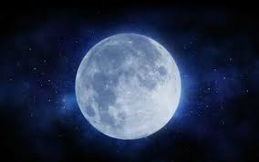

NASA MARTE SATURNO LUA

A Lua é o único satélite natural da Terra e o quinto maior do
Sistema Solar. É o maior satélite natural de um planeta no sistema
solar em relação ao tamanho do seu corpo primário, tendo 27% do
diâmetro e 60% da densidade da Terra, o que representa ¹⁄₈₁ da sua
massa.